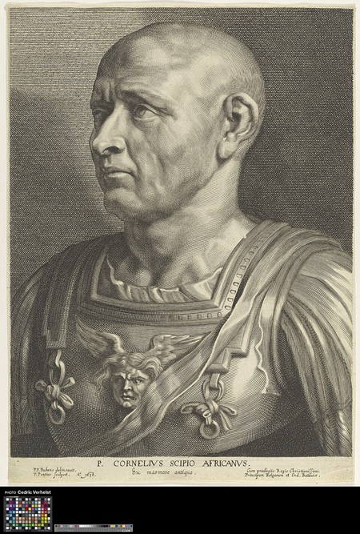

Scipion l'Africain

Qui est Scipion ?
Publius Cornelius Scipio, dit Scipion l'Africain, naît en 236 av. J.-C. dans une illustre famille romaine. Dès son adolescence, il est confronté à la brutalité de la guerre : il combat à la Trébie et à Cannes, où il survit au désastre romain. Loin d'être brisé, ces défaites le forgent et lui font comprendre qu'il faut étudier et dépasser les méthodes d'Hannibal.
À seulement 25 ans, il se porte volontaire pour prendre le commandement en Espagne, après la mort de son père et de son oncle au combat. Le Sénat, faute de candidats, lui confie cette mission périlleuse. Ce sera le début d'une carrière militaire exceptionnelle.
Source : Wikipedia — Scipion l'Africain
Ses accomplissements
En Espagne, Scipion prend par surprise Carthagène (Cartagena), la principale base carthaginoise de la péninsule, en un seul assaut fulgurant en 209 av. J.-C.. Il libère les otages hispano-romains, ce qui lui gagne l'amitié des tribus locales. En quelques années, il chasse les Carthaginois d'Espagne.
Puis, contre l'avis de nombreux sénateurs, il obtient l'autorisation de porter la guerre en Afrique. Il débarque près de Carthage en 204 av. J.-C., s'allie avec le roi numide Massinissa, et force Hannibal à quitter l'Italie pour défendre sa patrie. À Zama en 202 av. J.-C., il bat Hannibal en retournant contre lui ses propres tactiques d'encerclement. C'est ce triomphe qui lui vaut le surnom glorieux d'Africanus.
Source : Wikipedia — Scipion l'Africain
Un destin tragique
Malgré sa gloire, Scipion finit sa vie dans l'amertume. Accusé de corruption par ses ennemis politiques à Rome, il se retire dans sa villa de Liternum en Campanie et refuse de défendre son honneur devant un Sénat qu'il juge ingrat. Il meurt en 183 av. J.-C., la même année qu'Hannibal — comme si le destin avait voulu que ces deux géants disparaissent ensemble.
Il aurait fait inscrire sur son tombeau : "Ingrate patrie, tu n'auras pas même mes os." Scipion l'Africain reste l'un des plus grands généraux de l'histoire romaine, le seul homme à avoir battu Hannibal Barca sur le champ de bataille.
Source : Wikipedia — Scipion l'Africain